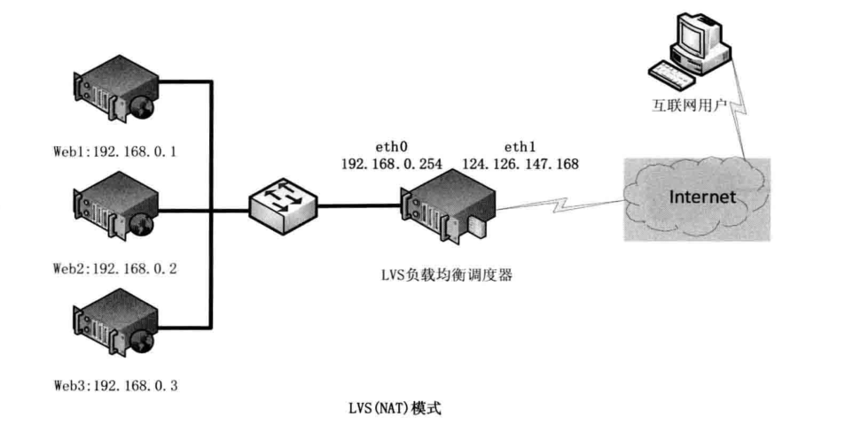
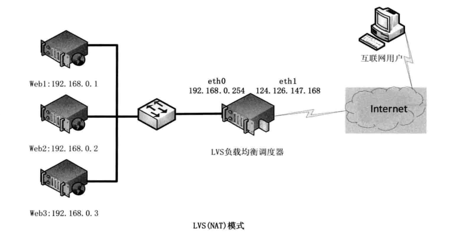
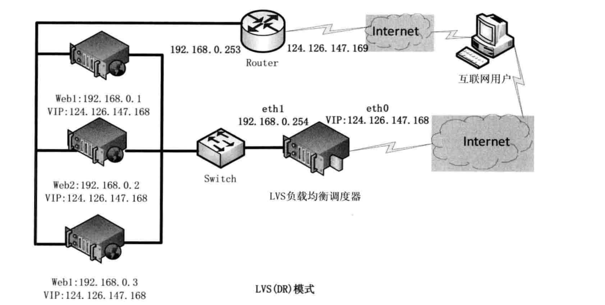
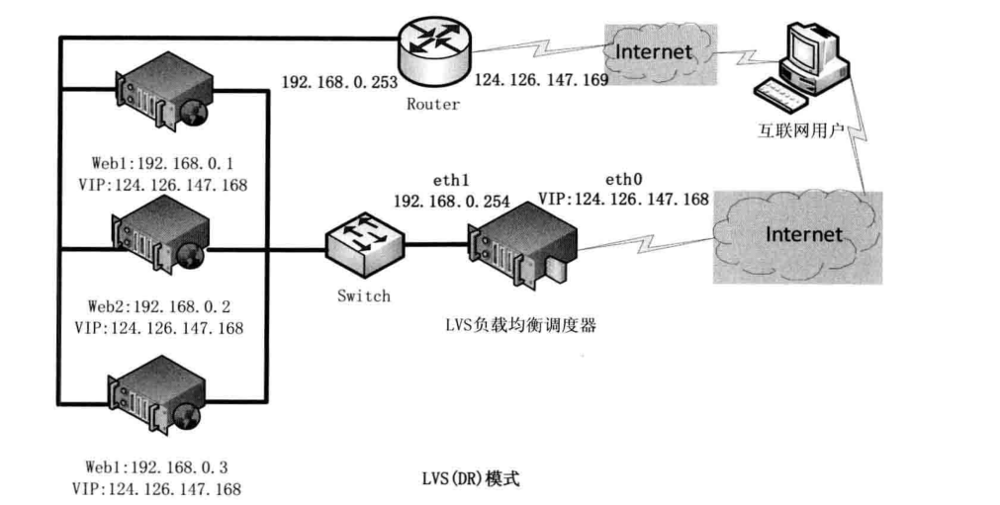

8.10. LVS+keeplaived高可用集群¶
LVS工作原理：
LVS简单工作原理为用户请求LVS VIP，LVS根据转发方式和算法，将请求转发到后端服务器，后端服务器接到请求
返回给用户，对于用户来说看不到Web后端具体的应用
LVS特点：
可伸缩网络服务的几种结构，它们都需要一个前端的负载调度器（或者多个进行主从备
份）。我们先分析实现虚拟网络服务的主要技术，指出 IP 负载均衡技术是在负载调度器的
实现技术中效率最高的。在已有的 IP 负载均衡技术中，主要有通过网络地址转换（Network
Address Translation）将一组服务器构成一个高性能的、高可用的虚拟服务器，我们称之
为 VS/NAT 技术（Virtual Server via Network Address Translation）。
LVS三种负载均衡技术：
LVS 转发方式有三种，分别是 NAT、DR、TUN 模式。
常用算法：RR(round-robin)、LC(least_connection)、W(weight)RR、WLC 模式等（RR 为轮询模式，LC 为最少连接
模式）
LVS NAT 原理：
用户请求 LVS 到达 director,director 将请求的报文的目标 IP 地址改
成后端的 realserver IP 地址，同时将报文的目标端口也改成后端选定的 realserver 相应
端口，最后将报文发送到 realserver，realserver 将数据返给 director，director 再把数
据发送给用户。（两次请求都经过 director，所以访问大的话，director 会成为瓶颈）
 

LVS DR 原理：
用户请求 LVS 到达 director,director 将请求的报文的目标 MAC 地址
改成后端的 realserver MAC 地址，目标 IP 为 VIP（不变），源 IP 为用户 IP 地址（保持
不变），然后 Director 将报文发送到 realserver，realserver 检测到目标为自己本地 VIP，
如果在同一个网段，然后将请求直接返给用户。如果用户跟 realserver 不在一个网段，则
通过网关返回用户。（此种转发效率最高）
 

LVS TUN 原理：
跟 LVS DR 类似，也是改变封装 MAC 地址，多了一层隧道加密。实
施环境复杂，比 LVS DR 模式效率略低。（图一为 LVS 负载均衡图）
那为什么要用lvs呢？
1.简单一句话，当并发超过了Nginx上限，就可以使用LVS了。
2.日1000-2000W PV或并发请求1万以下都可以考虑用Nginx。
3.大型门户网站，电商网站需要用到LVS。
相关参考文献：
http://www.linuxvirtualserver.org/zh/lvs3.html
8.10.1. LVS+keepalived 主从高可用模式¶
环境
主机名 IP地址 软件 系统版本
lvs01 172.17.252.34 lvs keepalived CentOS Linux release 7.6.1810 (Core)
lvs02 172.17.252.35 lvs keepalived CentOS Linux release 7.6.1810 (Core)
web03 39.106.40.172 tomcat CentOS Linux release 7.6.1810 (Core)
web04 39.107.137.111 tomcat CentOS Linux release 7.6.1810 (Core)
主机
[root@iZ2ze90qu1d4wtd3ngygfoZ ~]# cat /etc/redhat-release
CentOS Linux release 7.6.1810 (Core)
[root@iZ2ze90qu1d4wtd3ngygfoZ ~]# uname -a
Linux iZ2ze90qu1d4wtd3ngygfoZ 3.10.0-957.5.1.el7.x86_64 #1 SMP Fri Feb 1 14:54:57 UTC 2019 x86_64 x86_64 x86_64 GNU/Linux
[root@iZ2ze90qu1d4wtd3ngygfoZ ~]# getenforce
Disabled
[root@iZ2ze90qu1d4wtd3ngygfoZ ~]# systemctl status firewalld.service
â— firewalld.service - firewalld - dynamic firewall daemon
Loaded: loaded (/usr/lib/systemd/system/firewalld.service; disabled; vendor preset: enabled)
Active: inactive (dead)
Docs: man:firewalld(1)
安装2台tomcat web服务器
java环境
先查看是否有java环境： rpm -qa | grep java
如果没有java环境的话，接着就去查找java-1.8.0的可以使用的安装包：yum list | grep java-1.8.0-openjdk
安装java-1.8.0-openjdk所有的文件
[root@yoyo ~]# yum -y install java-1.8.0-openjdk*
查看版本号：java -version
[root@yoyo ~]# java -version
openjdk version "1.8.0_191"
tomcat安装
tomcat安装可以先下载安装包，再解压。也可以直接用yum在线安装，这里我们直接用yum在线安装更方便
yum install tomcat
//或者
yum -y install tomcat
tomcat默认端口是8080，接下来浏览输入地址：http://服务器公网ip:8080/。这个页面暂时是无法访问
由于tomcat的web页面是需要安装插件的，这里继续用 tomcat-webapps 和 tomcat-admin-webapps 两个插件包
yum -y install tomcat-webapps tomcat-admin-webapps
启动tomcat服务、查看tomcat服务状态
[root@yoyo tomcat]# systemctl start tomcat
[root@yoyo tomcat]# systemctl status tomcat
LVS基于Linux内核的模块ipvs与iptables一样是直接工作在内核中。
主流的linux已经默认集成了ipvs模块。 只需要安装管理工具ipvsadm，可以yum直接安装或者下载后编译安装。
安装ipvsadm管理工具
yum -y install ipvsadm
[root@bogon ~]# ipvsadm
IP Virtual Server version 1.2.1 (size=4096)
Prot LocalAddress:Port Scheduler Flags
-> RemoteAddress:Port Forward Weight ActiveConn InActConn
[root@bogon ~]# lsmod | grep ip_vs
ip_vs 145497 0
nf_conntrack 133095 1 ip_vs
libcrc32c 12644 3 xfs,ip_vs,nf_conntrack
LVS集群搭建
配置LVS负载均衡服务（在lb03操作）
步骤1：在eth0网卡绑定VIP地址（ip）
步骤2：清除当前所有LVS规则（-C）
步骤3：设置tcp、tcpfin、udp链接超时时间（--set）
步骤4：添加虚拟服务（-A），-t指定虚拟服务的IP端口，-s 指定调度算法 调度算法见man ipvsadm， rr wrr 权重轮询 -p 指定超时时间
步骤5：将虚拟服务关联到真实服务上（-a） -r指定真实服务的IP端口 -g LVS的模式 DR模式 -w 指定权重
步骤6：查看配置结果（-ln）
lvs_server.sh
#!/usr/bin/env bash
#usage:xxx
#scripts_name:xxx.sh
SNS_VIP=$2
SNS_RIP1=$3
SNS_RIP2=$4
if [ "$1" == "stop" -a -z "$2" ]; then
echo "------------------------------------"
echo -e "\033[32mPlease Enter $0 stop LVS_VIP\n\nEXample:$0 stop 192.168.1.111\033[0m"
echo
exit
else
if [ -z "$2" -a -z "$3" -a -z "$4" ]; then
echo "------------------------------------"
echo -e "\033[32mPlease Enter Input $0 start VIP REALSERVER1 REALSERVER2\n\nEXample:$0 start/stop 192.168.1.111 192.168.1.2 192.168.1.3\033[0m"
echo
exit 0
fi
fi
. /etc/rc.d/init.d/functions
logger $0 called with $1
function IPVSADM(){
/sbin/ipvsadm --set 30 5 60
/sbin/ifconfig eth0:0 $SNS_VIP broadcast $SNS_VIP netmask 255.255.255.255 broadcast $SNS_VIP up
/sbin/route add -host $SNS_VIP dev eth0:0
/sbin/ipvsadm -A -t $SNS_VIP:8080 -s wlc -p 120
/sbin/ipvsadm -a -t $SNS_VIP:8080 -r $SNS_RIP1:8080 -g -w 1
/sbin/ipvsadm -a -t $SNS_VIP:8080 -r $SNS_RIP2:8080 -g -w 1
}
case "$1" in
start)
IPVSADM
echo "------------------------------------"
/sbin/ipvsadm -Ln
touch /var/lock/subsys/ipvsadm > /dev/null 2>&1
;;
stop)
/sbin/ipvsadm -C
/sbin/ipvsadm -Z
ifconfig eth0:0 down >>/dev/null 2>&1
route del $SNS_VIP >>/dev/null 2>&1
rm -rf /var/lock/subsys/ipvsadm > /dev/null 2>&1
echo "ipvsadm stopped!"
;;
status)
if [ ! -e /var/lock/subsys/ipvsadm ]
then
echo "ipvsadm stopped!"
exit 1
else
echo "ipvsadm started!"
fi
;;
*)
echo "Usage:$0(start|stop|status)"
exit
esac
exit 0
LVS 单独执行绑定的 VIP：
VIP=192.168.111.200
ifconfig eth0:0 $VIP netmask 255.255.255.255 broadcast
$VIP
/sbin/route add -host $VIP dev eth0:
执行结果
[root@iZ2ze9tpl7iobi4d89ira2Z ~]# ./lvs_service.sh stop 172.17.252.38 39.106.40.172 39.107.137.111
ipvsadm stopped!
[root@lvs01 etc]# chmod 755 lvs_service.sh
[root@lvs01 etc]# ./lvs_service.sh start 172.17.252.38 39.106.40.172 39.107.137.111
SIOCADDRT: File exists
No such device or address
------------------------------------
IP Virtual Server version 1.2.1 (size=4096)
Prot LocalAddress:Port Scheduler Flags
-> RemoteAddress:Port Forward Weight ActiveConn InActConn
TCP 172.17.252.38:8080 wlc persistent 120
-> 39.106.40.172:8080 Route 1 0 0
-> 39.107.137.111:8080 Route 1 0 0
[root@lvs01 ~]# ip a
1: lo: <LOOPBACK,UP,LOWER_UP> mtu 65536 qdisc noqueue state UNKNOWN group default qlen 1000
link/loopback 00:00:00:00:00:00 brd 00:00:00:00:00:00
inet 127.0.0.1/8 scope host lo
valid_lft forever preferred_lft forever
2: eth0: <BROADCAST,MULTICAST,UP,LOWER_UP> mtu 1500 qdisc mq state UP group default qlen 1000
link/ether 00:16:3e:12:80:a4 brd ff:ff:ff:ff:ff:ff
inet 172.17.252.34/20 brd 172.17.255.255 scope global dynamic eth0
valid_lft 315359320sec preferred_lft 315359320sec
inet 172.17.252.38/32 brd 172.17.252.38 scope global eth0:0
valid_lft forever preferred_lft forever
客户端配置
ip addr add 10.0.0.13/32 dev lo
cat >>/etc/sysctl.conf<<EOF
net.ipv4.conf.all.arp_ignore = 1
net.ipv4.conf.all.arp_announce = 2
net.ipv4.conf.lo.arp_ignore = 1
net.ipv4.conf.lo.arp_announce = 2
EOF
lvs_client.sh
#!/usr/bin/env bash
#usage:xxx
#scripts_name:xxx.sh
VIP=172.17.252.38
case $1 in
start)
ifconfig lo:0 $VIP netmask 255.255.255.255 broadcast $VIP
/sbin/route add -host $VIP dev lo:0
echo "1" >/proc/sys/net/ipv4/conf/lo/arp_ignore
echo "2" >/proc/sys/net/ipv4/conf/lo/arp_announce
echo "1" >/proc/sys/net/ipv4/conf/all/arp_ignore
echo "2" >/proc/sys/net/ipv4/conf/all/arp_announce
sysctl -p >/dev/null 2>&1
echo "RealServer Start OK"
exit 0
;;
stop)
ifconfig lo:0 down
route del $VIP >/dev/null 2>&1
echo "0" >/proc/sys/net/ipv4/conf/lo/arp_ignore
echo "0" >/proc/sys/net/ipv4/conf/lo/arp_announce
echo "0" >/proc/sys/net/ipv4/conf/all/arp_ignore
echo "0" >/proc/sys/net/ipv4/conf/all/arp_announce
echo "RealServer Stoped OK"
exit 1
;;
*)
echo "Usage:$0 {start|stop}"
;;
esac
验证LVS的使用是否正常¶
在其他机器上访问VIP地址和端口
测试机1
[root@web01 ~]# curl 172.17.252.38:8080 | grep web
% Total % Received % Xferd Average Speed Time Time Time Current
Dload Upload Total Spent Left Speed
100 11215 0 11215 0 0 4706k 0 --:--:-- --:--:-- --:--:-- 5476k
<h1> web01 </h1>
<p>For security, access to the <a href="/manager/html">manager webapp</a> is restricted.
........
测试机2
[root@web02 ~]# curl 172.17.252.38:8080| grep web
% Total % Received % Xferd Average Speed Time Time Time Current
Dload Upload Total Spent Left Speed
100 11215 0 11215 0 0 7953k 0 --:--:-- --:--:-- --:--:-- 10.6M
<h1> web02 </h1>
<p>For security, access to the <a href="/manager/html">manager webapp</a> is restricted.
安装keepalived¶
两台lvs服务器安装keepalived
yum -y install keepalived
[root@lvs01 ~]# rpm -qa keepalived
keepalived-1.3.5-8.el7_6.x86_64
lvs01
[root@lvs01 home]# cat /etc/keepalived/keepalived.conf
global_defs {
router_id LVS_01
}
vrrp_instance VI_1 {
state MASTER
interface eth0
virtual_router_id 51
priority 150
advert_int 1
authentication {
auth_type PASS
auth_pass 1111
}
virtual_ipaddress {
172.17.252.38/20
}
}
virtual_server 172.17.252.38 8080 {
delay_loop 6
lb_algo wrr
lb_kind DR
nat_mask 255.255.240.0
persistence_timeout 50
protocol TCP
real_server 39.106.40.172 8080 {
weight 1
TCP_CHECK {
connect_timeout 8
nb_get_retry 3
delay_before_retry 3
connect_port 80
}
}
real_server 39.107.137.111 8080 {
weight 1
TCP_CHECK {
connect_timeout 8
nb_get_retry 3
delay_before_retry 3
connect_port 80
}
}
}
lvs02
[root@lvs02 home]# cat /etc/keepalived/keepalived.conf
global_defs {
router_id LVS_02
}
vrrp_instance VI_1 {
state BACKUP
interface eth0
virtual_router_id 51
priority 100
advert_int 1
authentication {
auth_type PASS
auth_pass 1111
}
virtual_ipaddress {
172.17.252.38/20
}
}
virtual_server 172.17.252.38 8080 {
delay_loop 6
lb_algo wrr
lb_kind DR
nat_mask 255.255.240.0
persistence_timeout 50
protocol TCP
real_server 39.106.40.172 8080 {
weight 1
TCP_CHECK {
connect_timeout 8
nb_get_retry 3
delay_before_retry 3
connect_port 80
}
}
real_server 39.107.137.111 8080 {
weight 1
TCP_CHECK {
connect_timeout 8
nb_get_retry 3
delay_before_retry 3
connect_port 80
}
}
}
关闭lvs01，访问查看网页状态
[root@lvs01 home]# reboot
[root@web02 ~]# curl 172.17.252.38:8080 | grep web
% Total % Received % Xferd Average Speed Time Time Time Current
Dload Upload Total Spent Left Speed
100 11215 0 11215 0 0 4220k 0 --:-<h1> web02 </h1>
-:-- - <p>For security, access to the <a href="/manager/html">manager webapp</a> is restricted.
-:--:-- --:--:-- 5476k
VIP 切换测试
手动停掉keepalived服务，VIP会自动切换到lvs02上
[root@lvs01 ~]# ip ad li eth0
2: eth0: <BROADCAST,MULTICAST,UP,LOWER_UP> mtu 1500 qdisc mq state UP group default qlen 1000
link/ether 00:16:3e:12:80:a4 brd ff:ff:ff:ff:ff:ff
inet 172.17.252.34/20 brd 172.17.255.255 scope global dynamic eth0
valid_lft 315359683sec preferred_lft 315359683sec
inet 172.17.252.38/32 brd 172.17.252.38 scope global eth0:0
valid_lft forever preferred_lft forever
inet 172.17.252.38/20 scope global secondary eth0
valid_lft forever preferred_lft forever
[root@lvs01 ~]# pkill keepalived
[root@lvs01 ~]# ip ad li eth0
2: eth0: <BROADCAST,MULTICAST,UP,LOWER_UP> mtu 1500 qdisc mq state UP group default qlen 1000
link/ether 00:16:3e:12:80:a4 brd ff:ff:ff:ff:ff:ff
inet 172.17.252.34/20 brd 172.17.255.255 scope global dynamic eth0
valid_lft 315359449sec preferred_lft 315359449sec
inet 172.17.252.38/32 brd 172.17.252.38 scope global eth0:0
valid_lft forever preferred_lft forever
启动服务后，VIP正常
[root@lvs01 ~]# !sys
systemctl start keepalived.service
[root@lvs01 ~]# ip a
1: lo: <LOOPBACK,UP,LOWER_UP> mtu 65536 qdisc noqueue state UNKNOWN group default qlen 1000
link/loopback 00:00:00:00:00:00 brd 00:00:00:00:00:00
inet 127.0.0.1/8 scope host lo
valid_lft forever preferred_lft forever
2: eth0: <BROADCAST,MULTICAST,UP,LOWER_UP> mtu 1500 qdisc mq state UP group default qlen 1000
link/ether 00:16:3e:12:80:a4 brd ff:ff:ff:ff:ff:ff
inet 172.17.252.34/20 brd 172.17.255.255 scope global dynamic eth0
valid_lft 315359367sec preferred_lft 315359367sec
inet 172.17.252.38/32 brd 172.17.252.38 scope global eth0:0
valid_lft forever preferred_lft forever
inet 172.17.252.38/20 scope global secondary eth0
valid_lft forever preferred_lft forever